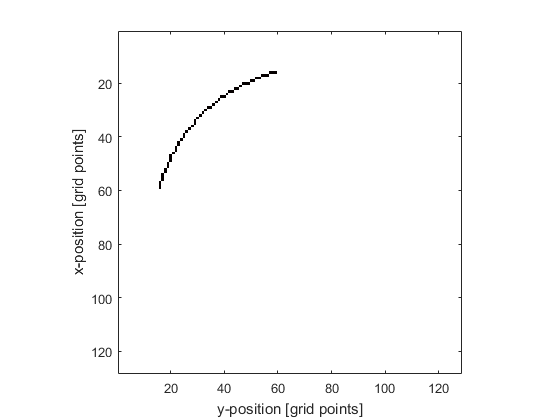

makeArc
Create a binary map of an arc within a 2D grid.
Syntax
arc = makeArc(grid_size, arc_pos, radius, diameter, focus_pos) arc = makeArc(grid_size, arc_pos, radius, diameter, focus_pos, ...)
Description
makeArc creates a binary map of an arc within a two-dimensional grid. The arc position is denoted by 1's in the matrix with 0's elsewhere. The arc is found using the mid-point circle algorithm, and is simply connected so that any grid point on the arc will have at most 2 neighbours.
The midpoint of the arc is set by arc_pos. The orientation of the arc is set by focus_pos, which corresponds to any point on the axis of the arc (note, this must not be equal to arc_pos). It is assumed that the arc angle is equal to or less than pi radians. If the radius is set to inf, a line is generated.
Examples
% define parameters grid_size = [128, 128]; arc_pos = [32, 32]; radius = 60; diameter = 61; focus_pos = grid_size; % create arc arc = makeArc(grid_size, arc_pos, radius, diameter, focus_pos, 'Plot', true);
Inputs
grid_size |
size of the 2D grid given as a three element vector [Nx, Ny] [grid points] |
bowl_pos |
midpoint of the arc given as a two element vector [ax, ay] [grid points] |
radius |
radius of curvature of the arc [grid points] |
diameter |
aperture diameter (length of line connecting arc endpoints) [grid points] |
focus_pos |
any point on the beam axis of the arc given as a two element vector [fx, fy] [grid points] |
Optional Inputs
Optional 'string', value pairs that may be used to modify the default computational settings.
| Input | Valid Settings | Default | Description |
|---|---|---|---|
'Plot' |
(Boolean scalar) | false |
Boolean controlling whether the arc is plotted using imagesc. |
Outputs
arcs |
2D binary map of arcs |
arc |
2D labelled matrix of arcs |
See Also
makeBowl, makeCartArc, makeLine, makeMultiArc